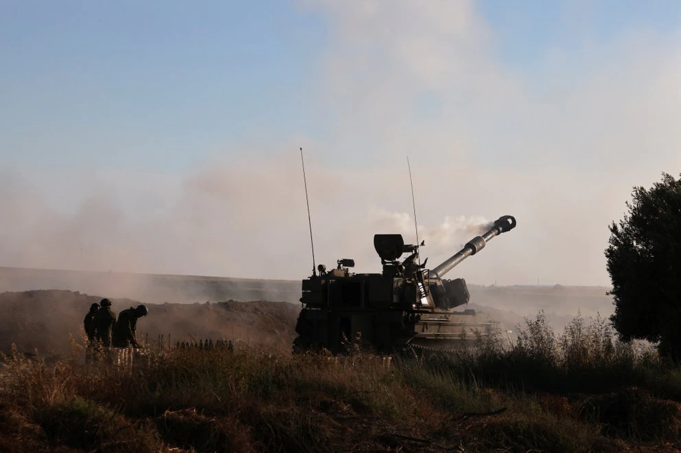

Nuevos Conflictos
El ejército israelí anunció este miércoles que abrió fuego con su artillería contra el sur de Líbano luego del lanzamiento de cuatro cohetes desde territorio libanés hacia el Estado hebreo, en el tercer ataque de este tipo en menos de una semana. “Cuatro cohetes fueron disparados desde Líbano hacia territorio israelí. El escudo antimisiles Cúpula de Hierro interceptó a uno de ellos y los otros tres cayeron probablemente en terrenos descampados. En represalia, nuestra artillería apuntó contra objetivos en territorio libanés”, indico el ejército en un breve comunicado. Las Fuerzas de Defensa israelíes agregaron que estaban preparadas “para cualquier escenario en cualquier frente”. Según dijo una fuente militar libanesa a la AFP, los cohetes fueron disparados desde cerca de la aldea de Seddiqine en el distrito de Tiro, dijo la fuente, sin especificar quién fue el responsable. No hubo informes inmediatos de víctimas.